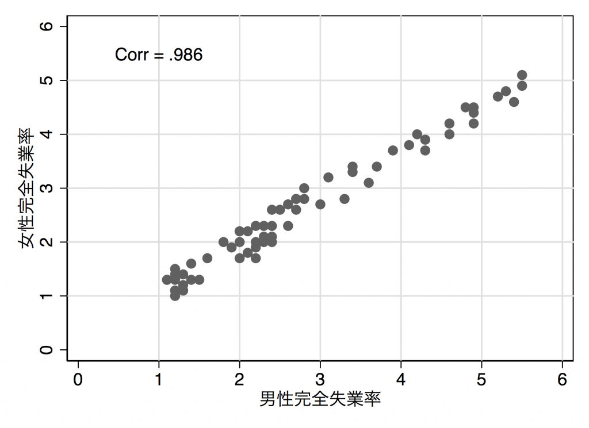

Stataで完全失業率の推移を作図する手順
はじめに
公表されている官庁統計から何らかの作図をするという機会はよくあると思います。
このとき最もポピュラーなのはエクセル上で作図するという方法です。しかし、エクセルでの手作業でなく、統計ソフトを介して作図するほうが良い点がいくつかあります。
作図に際してコードを書くため、似たような図を作る際に使いまわしができる。
年次データが更新されても、若干の修正ですぐに対応できる。
データが複雑であるほど、手作業で加工するとミスが生じる危険性が高くなる。しかし、コードを書いてデータを加工することで、どのような作業を介したのかの記録を残すことができる。
そこでここでは、完全失業率の年次推移を例に統計ソフトStataを使用して作図する手順についてメモしておきます。これはもともとのデータが比較的きれいでやることも単純なのでコードも単純ですが、データの構造によってはもっと工夫が必要になってきます。とはいえ基本的な部分は共通しています。もちろんここで上げたのはあくまで一例で、やり方としてもっと効率のいい方法があるかもしれないです。
目的を決める
日本における完全失業率の長期的な推移を知りたい。
公表集計を探す
お目当ての表をE-statなどを使って探す。完全失業率については、労働力調査の長期時系列データが利用できそう。今回は年齢階級の別にはこだわらないことと、月レベルの変化はさほど重要ではないと考えて、「表2 就業状態別15歳以上人口（労働力人口，就業者数，完全失業者数，非労働力人口，労働力人口比率，就業率，完全失業率など）（1953年〜）」を使う。
Stata上でデータを加工する
データの前処理
ダウンロードした表を適当なフォルダに置いておき、データを読み込む。import excel ""の""の部分に使うデータのパス名を入れる。sheet()の部分は読み込みたいデータが入っているシートの名前を指定する1。
import excel "/Users/RyotaMugiyama/Desktop/lt02.xls", sheet("長期02") clearGUIで操作する場合は、File > Import > Excel Spreadsheet (*.xls; *.xlsx)と選んでファイルを指定する。
つぎに、読み込んだデータを見て、必要な列を除き他の列を削除する（やらなくてもいいけど、そのほうが見やすい）。
***読み込んだデータを見る。
browse
***使用する列（今回は西暦を示すB列、全体の失業率を示すM列、男性失業率を示すX列、女性失業率を示すAI列）のみを残し、他を削除する。
keep B M X AI
*** それぞれ適当な名前をつける。
rename B Year
rename M UnemploymentRateTotal
rename X UnemploymentRateMale
rename AI UnemploymentRateFemale次に不要な行を削除する。
*** 行を削除する際の目印として使う変数を作る。
gen row = _n
*** 文字列や空白が入っている部分を削除。
drop if row <= 10
*** 1973年は沖縄を含む値と含まない値の両方が入っているため、含まない値のほうを削除。
drop if row == 31
*** 処理の途中で残った空白部分を削除。
drop if row >= 77もともとのデータで文字列が入っていた列については読み込みの際にstring変数として認識されており、このままでは数値として図を作ったりすることができない。そこで、destringという関数を使って変数を数値として認識させる。特定の変数だけを数値に変換したい場合にはdestringの後ろに変数名を記述する。書かない場合は、すべての変数を数値に変換してくれる。
destring, replaceなお列のなかに数字でない文字が残っている場合はうまくいかないので、文字を数字に置き換えておくか、カンマの後ろにforceと書くとその部分は欠損値（.）にしたうえで数字に書き換えてくれる。
グラフを作る
これで準備はととのったので、後は図を出力するだけ。たとえばこんなふうな感じ。
twoway ///
(line UnemploymentRateMale Year, lc(navy) lp(solid) ) ///
(line UnemploymentRateFemale Year, lc(cranberry) lp(dash) ) ///
,xtitle("年次") ytitle("完全失業率（%）") scheme(s1mono) ///
ylabel(0(1)6, grid) xlabel(1950(10)2010, grid) ///
legend(r(1) label(1 "男性") label(2 "女性")) scale(1.2)
*** 結果を出力。拡張子は.pdfや.pngが使える。
graph export "/Users/RyotaMugiyama/Desktop/unemploymentratemalefemale.pdf", replace
ここではグラフの書き方について詳しく解説はしないが、Stataでのグラフの作り方はこの本が参考になる。
Mitchell, Michael N. 2012. A Visual Guide to Stata Graphics, Third Edition. Stata Press.
もう一つ具体例。
pwcorr UnemploymentRateFemale UnemploymentRateMale
***相関係数をみると0.986らしい。これを書き込んだ散布図を作ってみる。
twoway ///
(scatter UnemploymentRateFemale UnemploymentRateMale ) ///
,scheme(s1mono) xtitle("男性完全失業率") ytitle("女性完全失業率") ///
ylabel(0(1)6, grid) xlabel(0(1)6, grid) ///
text(5.5 1 "Corr = .986") scale(1.2)
graph export "/Users/RyotaMugiyama/Desktop/unemploymentratecorr.pdf",replace
おわりに
今回は官庁統計の加工のなかでもかなりシンプルな例を扱ったのですが、より複雑な表だと、比率や合計の計算（egen）や横から縦への組み換え（reshape long）などのコマンドを使う機会も出てきます。そうした場合については、今後また時間があったら書こうと思います。
Footnotes
今は例なのでユーザー名は架空です。またデスクトップにエクセルファイルを置いていますが、これも説明のためなので、くれぐれも真似しないでください……↩︎